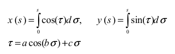
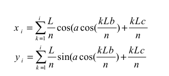
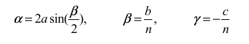
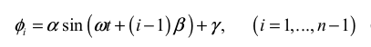
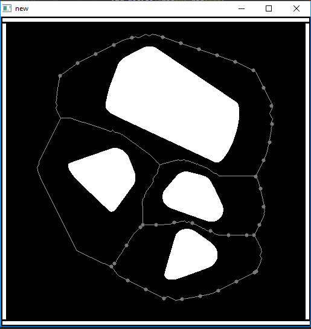
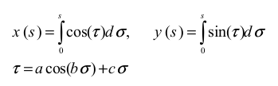
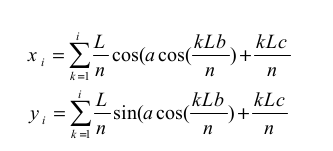
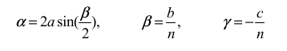
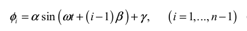
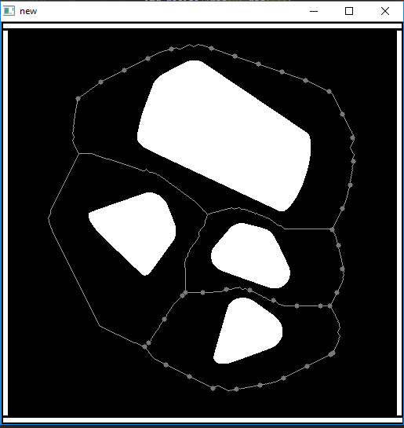

In this project we devise a predictive model to generate parameters for autonomous motion of a snake-like robot. The robot uses serpentine motion to move across an obstacle field. It is equiped with several sensors that act like the sensitive body of a snake. The predctive model relies on this sensor data obtained from the snake and the data from previous motion. We postulate that this data can be used to train a predictive model to generate the control parameters required for the motion of the snake-like robot.
Link to the project codes
Automated Navigation using Snake-like Robot
Abstract
1. Introduction
A snake-like robot, due to many degrees of freedom, has great mobility and flexibility allowing it to navigate though dense obstacle maps where conventional robots cannot traverse. A further, previously unused advantage is the fact that its oscillatory movement allows the bot to use sensors to map a wide portion of its environment. These features make it an invaluable tool in several applications. Thus we try to focus on using simple but elegant techniques to design an autonmous snake-robot.
1.1 Introduction to Problem
The snake has several types of moving techniques including side-winding, serpentine and rectilinear motion. We focus our work on serpentine motion as it can use obstacles as suppport to move along. The serpentine motion is goverened by a controller that takes in several parameters as input. Given these parameters one can generate a variety of motion from the snake. But these parameters have to be manually tuned for a certain type of motion. Taking inspiration from a real snake, we try to move the snake through an obstacle filled map. This will require the snake to change it's motion depending upon the sensor data from the environment. We proppose that this sensor data along with the knowledge of the previous move can be used to predict the upcoming moves for the robot.
However, the sensor data won't be directly useful for any purpose. The sensor data collected from the proximity sensors will be quite unintelligible to humans and it is not practical to feed this data directly to a serpenoid gait controller for autonomous navigation. We need to add an intermediate functional black-box that would implement machine learning techniques to predict the subsequent control parameters for the robot.
However, the sensor data won't be directly useful for any purpose. The sensor data collected from the proximity sensors will be quite unintelligible to humans and it is not practical to feed this data directly to a serpenoid gait controller for autonomous navigation. We need to add an intermediate functional black-box that would implement machine learning techniques to predict the subsequent control parameters for the robot.
1.2 Figure
Block diagram of the proposed solution.
 |
1.3 Literature Review
[1] Mohammad Dehghani, M. J. Mahjoob, "A Modified Serpenoid Equation for Snake Robots", Proceedings of the 2008 IEEE International Conference on Robotics and Biomimetics
This paper presents a modified set of serpenoid equations to navigate snake robots more efficiently. Serpentine gait is recognized as the most efficient gait for snakes in terms of energy, motor torques and friction forces. However, the conventional serpentine model is based on fixed parameters. This paper is an extension of the original work done by S. Hirose on deriving a mathematical model for serpentine motion of a snake. It describes some modifications on the existing controller in order to make it easier to adapt on real robots. It has been used as the basis for our simulated snake-robot model.
[2] Yasunobu Hitaka, Masahiro Yokomichi, "Obstacle Avoidance of a Snake Robot in Narrow Hallway", Proceedings of 2012 IEEE International Conference on Mechatronics and Automation, Chengdu, China
In this paper, a simple robot model is proposed that uses serpentine motion to move across an obstacle map. They use a serpenoid curve to approximate the serpentine motion. The control parameters of the curve are manually adjusted to fit the motion of the snake.
[3] Mark Pfeiffer, Michael Schaeuble, Juan Nieto, Roland Siegwart, Cesar Cadena, "From Perception to Decision: A Data-driven Approach to End-to-end Motion Planning for Autonomous Ground Robots", https://arxiv.org/abs/1609.07910v1
This paper describes the use of a CNN based technique to learn obstacle avoidance and motion planning for a simple 2-wheeled robot. It compares several methods used for autonomous navigation and path planning. It also reviews the use auto-encoders and Deep learning techniques to solve the problem of path planning in robots.
[4] Sromona Chatterjee , Timo Nachstedt , Florentin Wörgötter , Minija Tamosiunaite ,Poramate Manoonpong , Yoshihide Enomoto , Ryo Ariizumi and Fumitoshi Matsuno, "Reinforcement Learning Approach to generate Goal-directed Locomotion of a Snake-Like Robot with Screw-Drive Units", Robotics in Alpe-Adria-Danube Region (RAAD), 2014 23rd International Conference
This paper presents a reinforcement learning approach to learn the motion patterns of the snake. It focuses on using the screw and joint angles as control parameters for locomotion. It demostrates a Policy Improvement algorithm to learn the complex motion of a snake. It uses a real robot to demostrate the test results.
[5] Shuichi Fukunaga, Yutaka Nakamurat, Kazuaki Aso and Shin Ishii, "Reinforcement learning for a snake-like robot controlled by a central pattern generator ", Proceedings ofthe 2004 IEEE Conference on Robotics, Automation and Mechatronics Singapore, 2004
This paper develops a reinforcement learning algorithm to acquire a good control rule for a snake robot in dynamic environments. It uses a Central Pattern Generator as the control scheme for the snake robot. It also demonstrates target oriented motion and inlcined plane motion using the porposed approach.
1.4 Proposed Approach
As there was no open source design available for our snake robot, we start our work with designing a simulated snake robot for training and testing our algorithms.We designed our robot using V-rep simulation software. We further tune the simulated robot by changing the design parameters.
We also need a global path planner to achieve autonomous navigation in an obstacle map. We use watershed algorithm to solve this problem. The approach is similar to vornoi diagrams that generates several possible paths through a given map. These are then used by the snake robot to generate data.
We propose the following approaches to design a predictive model for our robot.
1. Finding corrlation between sensor data and control parameters of the serpenoid curve using k-means clustering.
2. Using ARMA model to predict the control parameters by treating it as a time series.(signal processing based approach)
3. Using a recurrent neural network to predict control parameters (machine learning based approach)
We also need a global path planner to achieve autonomous navigation in an obstacle map. We use watershed algorithm to solve this problem. The approach is similar to vornoi diagrams that generates several possible paths through a given map. These are then used by the snake robot to generate data.
We propose the following approaches to design a predictive model for our robot.
1. Finding corrlation between sensor data and control parameters of the serpenoid curve using k-means clustering.
2. Using ARMA model to predict the control parameters by treating it as a time series.(signal processing based approach)
3. Using a recurrent neural network to predict control parameters (machine learning based approach)
1.5 Report Organization
The report is dividied into following subsections:
1.First, we describe the simulated environemnt and the snake robot design. We also describe the control scheme used for the robot.
2.This is followed by a brief derciption of autonomous navigation and path planning approach.
3.Then, a brief description of the generated dataset is provided which is followed by the signal processig and machine laerning techniques employed in the project..
4. Finally, the end results are presented with a short conclusion. We also give a short note on possible future improvements.
1.First, we describe the simulated environemnt and the snake robot design. We also describe the control scheme used for the robot.
2.This is followed by a brief derciption of autonomous navigation and path planning approach.
3.Then, a brief description of the generated dataset is provided which is followed by the signal processig and machine laerning techniques employed in the project..
4. Finally, the end results are presented with a short conclusion. We also give a short note on possible future improvements.
2. Proposed Approach
Designing simulated snake robot:
The snake and it's environment is designed on the Virtual Robot Experimentation Platform (V-rep). The design of the robot is based on the available material and components required to make a real robot. This will make it easier to reproduce the test results on a real snake robot. The robot has the folowing features-
1. 8 subsections joined together by 7 motors. Each motor has a turning angle of 0-180 degrees.
2. 17 proximity sensors, 8 on each side of the robot and one on the head.
3. 8 wheels, each attached to one subsection. Each wheel is free to rotate about it's axis.

Control system for generating motion:
The snake robot uses serpenoid curve as its control scheme. This serpenoid curve is used to generate serpentine motion in th robot. The serpenoid curve was originally introduced by Hirose to approximate the the serpentine motion of a snake. We use the modified serpenoid curve presented in [1].
The original mathematical model proposed by Hirose. 
The modified discretised version of serpenoid curve. This makes it possible to implement the serpenoid curve on a simulation as well as a real robot because both these applications require discrete time control systems. 
Since our snake uses motors on each joint between two subsections, we use the relative angle between these subsections as our output rather than generating the x and y coordinates for all the subsections. This also eliminates the need for a global co-ordinate system for the x and y values.
The control system takes parameters a,b and c as input and uses them to calculate alpha, beta and gamma. Alpha, beta, gamma and the joint number i are then used in the below equation to generate the relative angle phi.
The parameters a and b were experimentally chosen for our design of snake robot. The "c" value is the control parameter that governs the direction of motion of the robot. We will design predictive models in the following sections to predict "c" using the sensor data and the control paramters already available.


Designing the environment:
The environment of the snake robot is a horizontal plane with static coeff. of friction 0.5. We use several polygonal objects as obstacles to generate an obstacle map. These obstacles are randomly generated on intialisation of the simulation. This helps us in introducing diversity in our dataset.
Path planning:
Given a map full of random obstacles, a path is autonomously planned using the following method:
1. Watershed algorithm is applied on the image which segments the image in such a way that each enclosed boundary contains only one obstacle and the boundary is equidistant from the two closest obstacle. This works similar to voronoi diagrams. However this is a much more advanced algorithm than voronoi decomposition as voronoi can only segment a plane by drawing boundaries between points. However watershed algorithm can deal with obstacles of any shapes and size.
2. One limitation of using watershed is that it will give a path even between two obstacles that are very close to each other. However making the snake move through such narrow spaces will lead to collision with the obstacles. To solve this, we first take a distance transform of the obstacle map and perform a pixelwise-and operation with the output of watershed algorithm. This gives us a an image in which the intensity of the path indicates its safeness, brighter path being safer.
3. Next, we thresholded the image (threshold value chosen by experimentation). This gives us an image with some broken paths leading to dead ends. These loose ends are removed by pixelwise manipulation.
4. Then, intersections of two paths are located using pixelwise calculation. Neighbors of all intersections are also found by traversing each path.
5. Once all junctions are located, all paths between two junctions are generated using a recursive graph theory algorithm.
The lines represent all the possible paths. The dots represent one possible path around the obstacles. 
K-Means Clustering:
We propose that there might be certain environmental configurations which can be associated to a particular sequence of sensor values. For example, a configuration where most sensors to the right of the snake and the one at the head detect obstacles nearby, then the snake will turn left. So, for a configuration similar to this, the snake should perform in similar fashion. Thus, we first cluster the sensor data, and perform statistical analysis on the control paramters "c" and the sensor data of all data points to see whether some correlation exists.
Auto Regressive Moving Avegare (ARMA):
One necessary condition of using ARMA process is that there should be some linear correlation between inputs and outputs. We postulated that such a correlation might be present. But the correlation heatmap shown below suggests very low linear correlation between the two entities. This implies that using an ARMA model would not be useful in our case. So we had to discard the ARMA model.
The brightest blocks have the highest correlation while the dark blocks have low correlation.
LSTM Model:
From our observaton made during the simualtion of the snake robot, we found that the the "c" value or the heading direction depends upon the previous configuration of the robot and the sensor data of the present time-stamp. Thus, we try to design a recurrent neural network using an LSTM cell to predict the "c" value from the sensor values and control paramters of previous time-stamp. We use a single layer of 50 neurons, each nueron being a LSTM cell.
Input feature vector: 17 sensor values and "c" value from previous time-stamp
Output of network: "c" value for current time-stamp.
The results are presented in the next section.
The snake and it's environment is designed on the Virtual Robot Experimentation Platform (V-rep). The design of the robot is based on the available material and components required to make a real robot. This will make it easier to reproduce the test results on a real snake robot. The robot has the folowing features-
1. 8 subsections joined together by 7 motors. Each motor has a turning angle of 0-180 degrees.
2. 17 proximity sensors, 8 on each side of the robot and one on the head.
3. 8 wheels, each attached to one subsection. Each wheel is free to rotate about it's axis.
Control system for generating motion:
The snake robot uses serpenoid curve as its control scheme. This serpenoid curve is used to generate serpentine motion in th robot. The serpenoid curve was originally introduced by Hirose to approximate the the serpentine motion of a snake. We use the modified serpenoid curve presented in [1].
The original mathematical model proposed by Hirose. 
The modified discretised version of serpenoid curve. This makes it possible to implement the serpenoid curve on a simulation as well as a real robot because both these applications require discrete time control systems. 
Since our snake uses motors on each joint between two subsections, we use the relative angle between these subsections as our output rather than generating the x and y coordinates for all the subsections. This also eliminates the need for a global co-ordinate system for the x and y values.
The control system takes parameters a,b and c as input and uses them to calculate alpha, beta and gamma. Alpha, beta, gamma and the joint number i are then used in the below equation to generate the relative angle phi.
The parameters a and b were experimentally chosen for our design of snake robot. The "c" value is the control parameter that governs the direction of motion of the robot. We will design predictive models in the following sections to predict "c" using the sensor data and the control paramters already available.


Designing the environment:
The environment of the snake robot is a horizontal plane with static coeff. of friction 0.5. We use several polygonal objects as obstacles to generate an obstacle map. These obstacles are randomly generated on intialisation of the simulation. This helps us in introducing diversity in our dataset.
Path planning:
Given a map full of random obstacles, a path is autonomously planned using the following method:
1. Watershed algorithm is applied on the image which segments the image in such a way that each enclosed boundary contains only one obstacle and the boundary is equidistant from the two closest obstacle. This works similar to voronoi diagrams. However this is a much more advanced algorithm than voronoi decomposition as voronoi can only segment a plane by drawing boundaries between points. However watershed algorithm can deal with obstacles of any shapes and size.
2. One limitation of using watershed is that it will give a path even between two obstacles that are very close to each other. However making the snake move through such narrow spaces will lead to collision with the obstacles. To solve this, we first take a distance transform of the obstacle map and perform a pixelwise-and operation with the output of watershed algorithm. This gives us a an image in which the intensity of the path indicates its safeness, brighter path being safer.
3. Next, we thresholded the image (threshold value chosen by experimentation). This gives us an image with some broken paths leading to dead ends. These loose ends are removed by pixelwise manipulation.
4. Then, intersections of two paths are located using pixelwise calculation. Neighbors of all intersections are also found by traversing each path.
5. Once all junctions are located, all paths between two junctions are generated using a recursive graph theory algorithm.
The lines represent all the possible paths. The dots represent one possible path around the obstacles. 
K-Means Clustering:
We propose that there might be certain environmental configurations which can be associated to a particular sequence of sensor values. For example, a configuration where most sensors to the right of the snake and the one at the head detect obstacles nearby, then the snake will turn left. So, for a configuration similar to this, the snake should perform in similar fashion. Thus, we first cluster the sensor data, and perform statistical analysis on the control paramters "c" and the sensor data of all data points to see whether some correlation exists.
Auto Regressive Moving Avegare (ARMA):
One necessary condition of using ARMA process is that there should be some linear correlation between inputs and outputs. We postulated that such a correlation might be present. But the correlation heatmap shown below suggests very low linear correlation between the two entities. This implies that using an ARMA model would not be useful in our case. So we had to discard the ARMA model.
The brightest blocks have the highest correlation while the dark blocks have low correlation.
LSTM Model:
From our observaton made during the simualtion of the snake robot, we found that the the "c" value or the heading direction depends upon the previous configuration of the robot and the sensor data of the present time-stamp. Thus, we try to design a recurrent neural network using an LSTM cell to predict the "c" value from the sensor values and control paramters of previous time-stamp. We use a single layer of 50 neurons, each nueron being a LSTM cell.
Input feature vector: 17 sensor values and "c" value from previous time-stamp
Output of network: "c" value for current time-stamp.
The results are presented in the next section.
3. Experiments & Results
3.1 Dataset Description
The simulated snake robot was used to generate the dataset for training the LSTM model. The data has following features -
1 head mounted sensor
16 side mounted sensors. 8 on the left and 8 on the right.
Heading direction value for current motion (c-value)
The dataset contains 59435 samples of data sequences, each of them being a vector of size 18. The first 17 values are the sensor values while last value is the "c" value for that time-stamp.
As per the general rule of thumb, the dataset was then divided into training and testing set (70:30). We have used a scaled version of the entire dataset to prevent errors during training and ease evaluation. This data was generated using 45 real-time simulations performed in the snake-robot simulator.
Generating trainig data in the snake-robot simulator
1 head mounted sensor
16 side mounted sensors. 8 on the left and 8 on the right.
Heading direction value for current motion (c-value)
The dataset contains 59435 samples of data sequences, each of them being a vector of size 18. The first 17 values are the sensor values while last value is the "c" value for that time-stamp.
As per the general rule of thumb, the dataset was then divided into training and testing set (70:30). We have used a scaled version of the entire dataset to prevent errors during training and ease evaluation. This data was generated using 45 real-time simulations performed in the snake-robot simulator.
Generating trainig data in the snake-robot simulator
3.2 Discussion
Results of K-means:
We performed two clusterings with K as 10 and 25. For both clusterings, we did not observe any significant similarity between the "c" value of all the points in a particular clusters. The statistical analysis was performed on matlab. We have presented the results below. We observe that means are very close to zero. So, even though variances of "c" value for most clusters are small, these clustering models will fail to give sharp change in "c" value. This is desired in case of sharp turns.
It is important to note that we modified the dataset such that the frequency of occurence of values of "c" value (heading direction) was as uniform as possible to prevent skewness in the dataset.
Results of LSTM:
We have used a scaled version of the entire dataset to prevent errors during training and ease evaluation. The scaling was done as follows -
Sensor values (0,10) --> (0,1)
Heading direction (c-value) (-5,5) --> (-1,1)
The training results are -

We have used a RMS measure to evaluate the training and testing error.
Trainig Loss: 0.0019
Testing Loss: 0.0025
The results suggest that the model behaves perfectly well for the given problem.
We performed two clusterings with K as 10 and 25. For both clusterings, we did not observe any significant similarity between the "c" value of all the points in a particular clusters. The statistical analysis was performed on matlab. We have presented the results below. We observe that means are very close to zero. So, even though variances of "c" value for most clusters are small, these clustering models will fail to give sharp change in "c" value. This is desired in case of sharp turns.
It is important to note that we modified the dataset such that the frequency of occurence of values of "c" value (heading direction) was as uniform as possible to prevent skewness in the dataset.
 |
 |
Results of LSTM:
We have used a scaled version of the entire dataset to prevent errors during training and ease evaluation. The scaling was done as follows -
Sensor values (0,10) --> (0,1)
Heading direction (c-value) (-5,5) --> (-1,1)
The training results are -
We have used a RMS measure to evaluate the training and testing error.
Trainig Loss: 0.0019
Testing Loss: 0.0025
The results suggest that the model behaves perfectly well for the given problem.
4. Conclusions
4.1 Summary
In this work we presented a data-driven approach towards solving a navigation problem for a redundant system. We have successfully shown that it is possible to learn a control strategy by using the surrounding environment as an input. The LSTM based model is able to learn a navigation strategy and use it with the serpenoid controller.
4.2 Future Extensions
We have observed that even though the model has shown great prediction accuracy on the test data, it is not able to provide a proper navigation strategy for the simulated snake-robot. Thus, we aim to work further on this problem to correct the robot behaviour and incorporate goal-directed locomotion into the snake-robot.